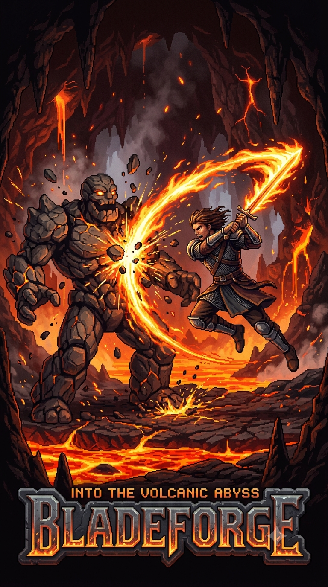
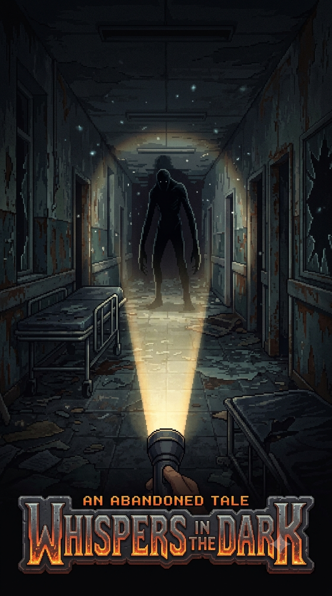
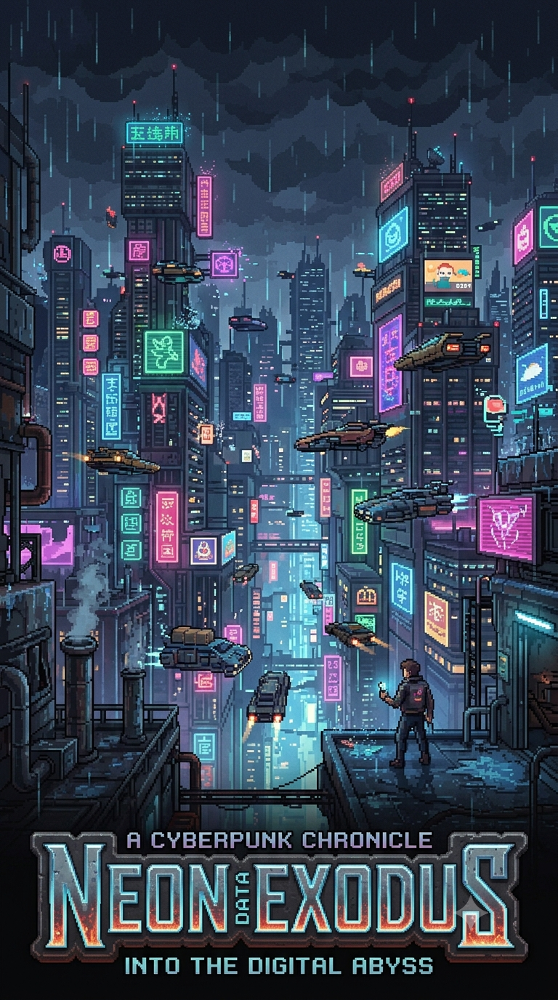
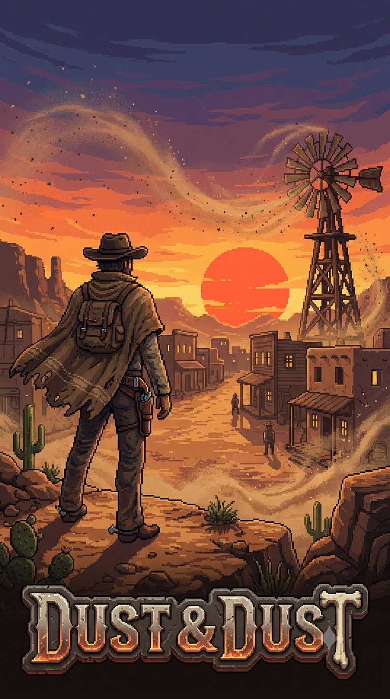
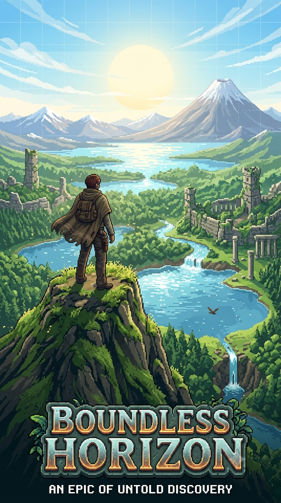

Portifólio do Jogos
BladeForge

Pitch: "A precisão da lâmina encontra o caos da magia."
História: Após o despertar de uma antiga forja profana, máquinas sencientes e golens de pedra invadiram o reino de Valen. A última guardiã da ordem precisa reativar as runas ancestrais para conter o avanço das hordas mecânicas.
Mecânicas Principais: Sistema de parry preciso, troca de armas em tempo real (espada leve vs. martelo pesado) e combos aéreos com física fluida.
Direção de Arte & Som: Pixel art vibrante em 16-bit com iluminação dinâmica de partículas. Trilha sonora com guitarras pesadas e orquestra sinfônica.
Público-Alvo: Fãs de Dead Cells, Hades e hack and slash clássicos.
Whispers in the Dark

Pitch: "O silêncio é a sua única arma."
História: O detetive Thomas desperta no Sanatório St. Jude sem memórias de como chegou lá. Conforme explora as alas abandonadas, percebe que o lugar não está vazio e que as entidades que habitam a escuridão caçam através do som da sua respiração.
Mecânicas Principais: Gestão do batimento cardíaco do personagem, mecânica de prendimento de respiração, escassez severa de baterias/recursos e enigmas ambientais usando frequência de rádio.
Direção de Arte & Som: Visual sombrio em tom sobre tom (pretos, cinzas e verdes escuros). Áudio binaural 3D projetado para fones de ouvido.
Público-Alvo: Entusiastas de Outlast, Silent Hill e horror de sobrevivência puro.
Neon Exodus

Pitch: "Em uma cidade de ferro e neon, sua lealdade tem um preço."
História: Ano 2188, na megacidade de Neo-Veridia. Quando um vírus digital ameaça desligar as próteses vitais da classe trabalhadora, uma célula rebelde precisa invadir os servidores centrais das corporações para salvar a população.
Mecânicas Principais: Batalhas táticas em grid por turnos, sistema de hacking de membros cibernéticos dos inimigos durante o combate e ramificação narrativa com escolhas morais cinzentas.
Direção de Arte & Som: Estilo retrô-futurista rico em luzes neon e chuva contínua. Trilha Synthwave / Darkwave original.
Público-Alvo: Jogadores de Cyberpunk 2077, XCOM e RPGs focados em história.
Dust & Dust

Pitch: "Chumbo, poeira e vingança ao pôr do sol."
História: O Condado de Oakhaven virou terra sem lei após a gangue dos Sete Diabos tomar o controle das minas de ouro. Um ex-xerife retorna para caçar cada membro do bando e recuperar o que sobrou da sua cidade.
Mecânicas Principais: Visão isométrica com cobertura (cover system), mecânica de saque rápido em duelos diretos e customização de revólveres com munições especiais.
Direção de Arte & Som: Estilo artístico rico em tons quentes (laranja, amarelo, terracota) com poeira volumétrica. Trilha com violões acústicos e assobios marcantes.
Público-Alvo: Fãs de Red Dead Redemption, Desperados e shooters táticos.
Boundless Horizon

Pitch: "Descubra o desconhecido. Reconstrua o mundo."
História: Um evento cataclísmico dividiu o mundo em biomas flutuantes e desconectados. Como um dos "Caminhantes", seu papel é explorar o mundo destruído, unir os assentamentos sobreviventes e descobrir a causa do Colapso.
Mecânicas Principais: Construção modular de bases, exploração com planadores e ganchos, ecossistema vivo com cadeia alimentar e modo cooperativo online para até 4 jogadores.
Direção de Arte & Som: Estilo cell-shading expansivo, com horizontes limpos e cores
Público-Alvo: Jogadores de The Legend of Zelda: Breath of the Wild, Valheim e Minecraft.